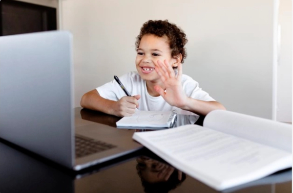

A dificuldade de manter a organização dos estudos durante a pandemia
Uma pesquisa feita pela Associação Brasileira de Educação e Distância (ABED) aponta que 67% dos estudantes têm dificuldade de manter uma rotina organizada de estudos.
Durante a pandemia, os quesitos de educação escolar se complicaram, uma vez que as instituições de ensino e os estudantes precisaram se adaptar ao ensino online e uma pesquisa feita pela ABED sobre as atividades remotas na educação durante a pandemia mostra que essa adaptação não tem sido fácil.

O levantamento feito entre agosto e setembro mostra que 60,5% dos estudantes participam de quase todas as atividades do gênero oferecidas pela escola, mas 72,6% consideram que o estudo remoto é pior na comparação com as aulas presenciais. Ainda no que se refere às atividades remotas, 29,2% dos estudantes entrevistados disseram ter dificuldade em conexão com a internet, por causa do sinal das operadoras.
Para 10,8% deles, não ter dispositivo próprio e precisar compartilhá-lo com outros integrantes da casa, afeta o estudo e a aprendizagem durante o período da pandemia. Já em relação ao acesso à internet, 63,5% responderam ter banda larga ilimitada e 25,8% utilizam de terceiros. Quando questionados sobre seu papel, 94,8% dos educadores consideram que é importante interagir virtualmente com os estudantes a fim de manter o processo de ensino e aprendizagem. Além disso, a pesquisa também aponta que 67% dos estudantes têm dificuldade de manter uma rotina organizada de estudos.
Reinvenção e organização dos estudos é fundamental para realmente ocorrer a aprendizagem, mas nem todos conseguem fazer isso, ficando vulneráveis e ansiosos.
Separamos dicas para ajudá-los nesse processo.
Organizar seu ambiente de estudos, por exemplo, definir onde vai estudar, te ajuda a se concentrar em uma tarefa, então escolha um ambiente tranquilo e sem muita movimentação, ou seja, um espaço só seu para estudar, pois se manter bem, também faz parte para que o aprendizado flua. Deixe arrumado todos os materiais para não causar distrações.
Planejar o que você vai fazer em cada dia ajuda a visualizar como deve ser sua rotina. Identifique seus horários e suas tarefas (aquelas que são mais importantes) e as distribua de acordo com os dias. Também é possível separar as atividades pelas cores, incluir anotações e até criar um "plano para emergências" para saber o que fazer, caso algo saia do previsto. Sempre use a técnica leitura- revisão - exercícios para treinar o que você aprendeu.
Como estamos em casa, há muitas distrações ao nosso redor, como a nossa cama, a televisão ou o celular, o seu maior inimigo. Quando for estudar, avise às pessoas com quem você mora, separe o que vai usar, anote em uma lista das suas tarefas e defina o tempo de estudo e também faça pausas - seu corpo não é uma máquina e precisa de cuidados. Se suas notificações o atrapalham, instale o aplicativo "Forest" para ajudar a focar em suas tarefas, ou se não, vá em "Bem Estar Digital" em configurações e ative o Modo de Foco. Use a tecnologia a seu favor.
Sempre estabeleça metas para cumprir, como acordar/dormir cedo, estudar matemática por uma hora na Quarta-feira ou treinar Inglês assistindo aulas de conversação, por exemplo. Fazendo isso, seu cérebro vai identificar que você tem coisas a fazer, estimulando a motivação. Sempre que cumprir uma meta, dê uma recompensa a si mesmo.
Dito isso, é importante lembrar que cada organismo se adapta a técnicas diferentes, então experimente várias para encontrar uma que se encaixe em sua realidade. O aprendizado aprimora habilidades e competências de cada pessoa, desempenhando um papel fundamental na formação dos valores e de comportamento nas mesmas, então invista seu tempo no seu aprimoramento pessoal e acadêmico.